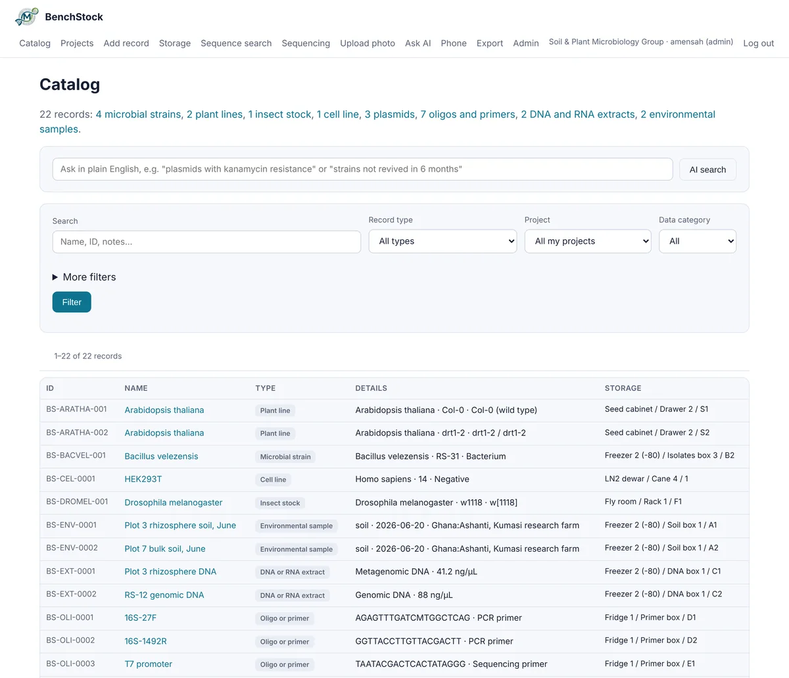
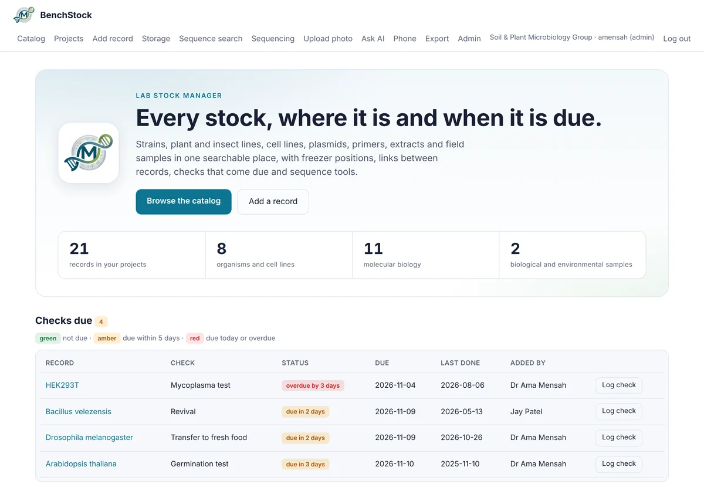
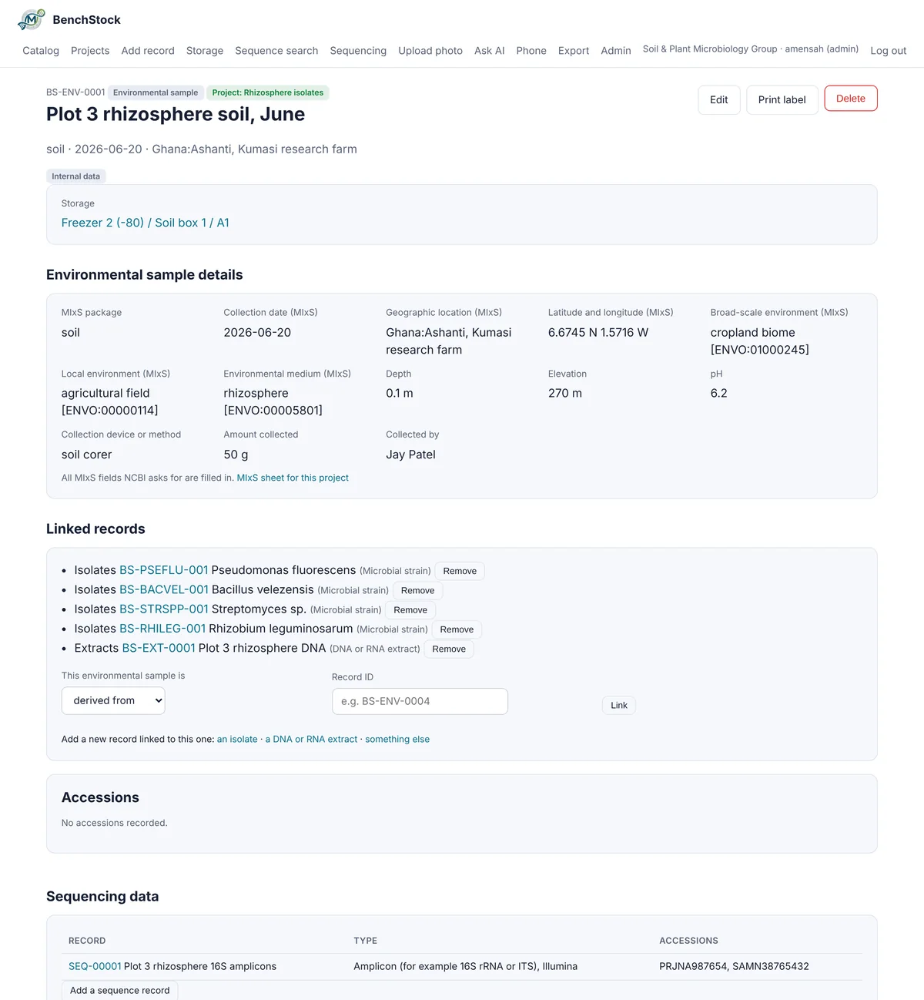
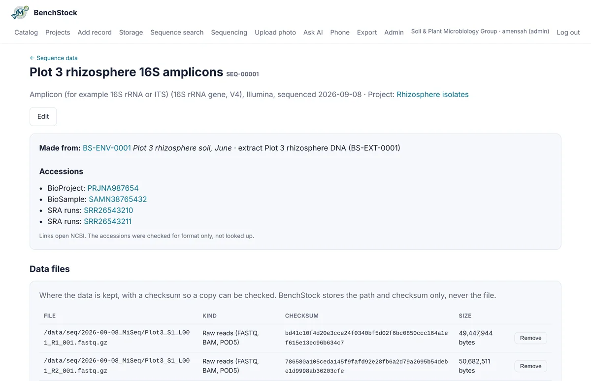
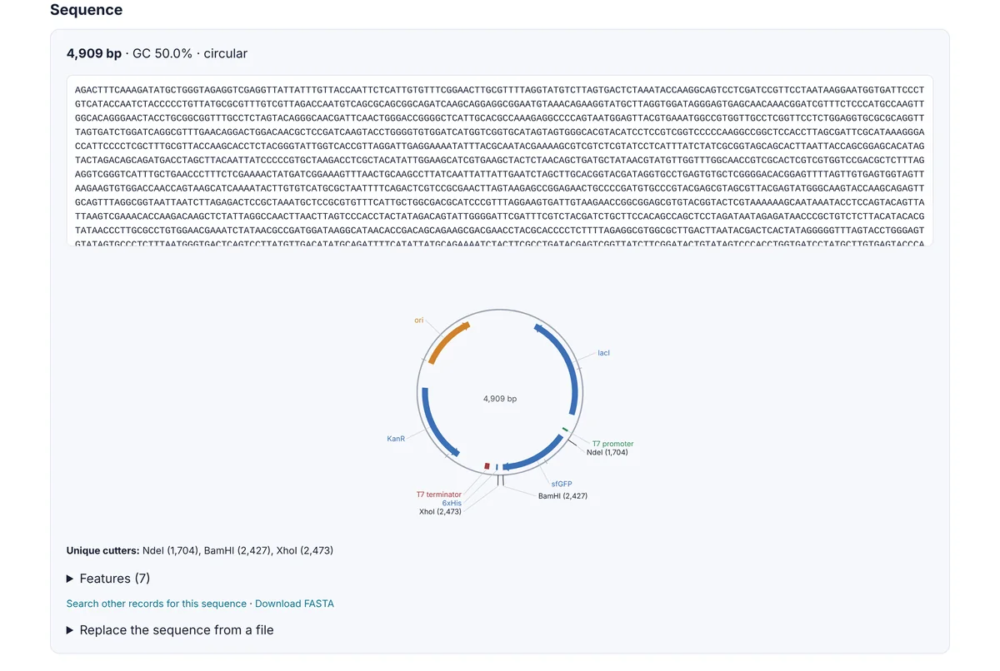
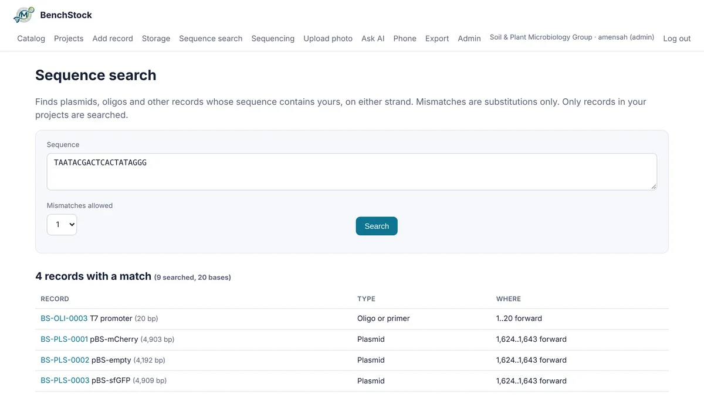
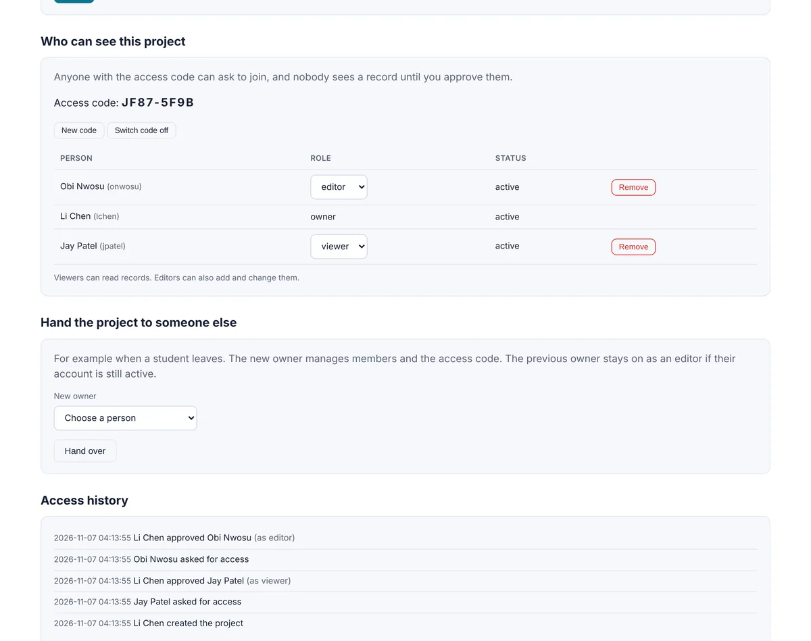

Every stock your group keeps, and where it came from.
BenchStock keeps a research group's strains, seed lots, fly stocks, cell lines, plasmids, primers, extracts and field samples in one searchable place. It links each field sample to its isolates, extracts and sequencing records, and shares it project by project. It is free, open source and runs on your own computer or server.
Example records with invented accession numbers. Select one to see its details.
The whole tool in 95 seconds
Captions carry the story, so it works with the sound off. Jump to any part:
What it does for a research group
Built around the questions a group asks about its freezers: what do we have, where is it, is it still good, where did it come from, and who can see it.
One catalogue for every kind of stock
Nine kinds of record are built in: microbial strains, plant lines, insect stocks, cell lines, plasmids, oligos and primers, DNA and RNA extracts, biological samples and environmental samples. Each kind has its own fields, checked as they are entered, and every record has a freezer, box and position.
If your group keeps something else, an administrator can add a new kind of record with its own fields, and it works with search, storage, labels, import and export straight away.

Checks that come due, for each kind of stock
Revivals for frozen strains, germination tests for seed lots, transfers to fresh food for fly stocks and mycoplasma tests for cell lines. Set an interval on a record and the home page lists what is due, in amber five days ahead and in red when it is overdue. Each check is dated and carries the name of the person who logged it.

From field sample to sequence archive
Environmental samples carry the MIxS fields NCBI asks for, checked as you type: dates, coordinates, country names, ENVO terms and pH. The page says whether anything is missing, and a sample sheet downloads in the column layout that BioSample submissions use.
Isolates and extracts link back to the sample they came from. A sequencing record names what was sequenced, holds its BioProject, BioSample and run accessions, checked for format and linked to NCBI, and lists the data files by path and checksum. The files stay where they are.


Plasmids and primers with their sequences
Upload a GenBank or FASTA file and a plasmid gets a circular map with its features and the enzymes that cut it once. A primer shows its length, GC content and melting temperature, worked out by the nearest-neighbour method for stated salt and primer concentrations.
Ask which of your plasmids a primer binds: the sequence search looks through every sequence you can open, on both strands and across the origin, allowing up to three mismatches, and flags mismatches near the 3' end.


Projects that only their members can see
Every record belongs to a project. Colleagues join with the project's code, and the owner approves each one as a viewer, who can read, or an editor, who can also make changes. Every request, approval and change of role is kept in the project's access history.
People outside a project cannot open, search or export its records. Shared freezers still work: a position used by a project you cannot see shows as taken, without saying what is in it. The lab head gets a report of who can see each project.

QR labels
Print labels in three sizes with each record's key details and a QR code that opens its page on any phone.
Bring your spreadsheets
Import a CSV or Excel file of mixed record types with a preview first. Export the whole lab as plain CSV files or one workbook, with a sheet for each kind of record.
Sign-in that suits your institution
Passwords with lockout, optional two-step codes from an authenticator app, and sign-in with an institutional account through OpenID Connect. Forgotten passwords are reset with single-use links.
Several labs on one server
One installation can serve several labs, each walled off from the others. The person who runs the server can suspend a lab but never sees its records.
Works on phones and tablets
Pages are built to work on a phone, so you can look up a box or log a check at the bench. No app store, nothing to install.
Tools for microbial strains
Strains keep the plate photographs, colony reading, 3D plate models and Gram stain history of the Microbial Digital Library, the sister tool BenchStock grew from.
What has been tested
Results from the project's own test suites. The same suites run on Linux, Windows and macOS for every change pushed to GitHub.
| Automated checks | 961 checks in six test suites pass on version 5.2.0, covering accounts, projects, records, samples and sequencing data, sign-in, password resets, and backup and restore. |
|---|---|
| Who can see what | Every kind of record, photo, label, link, search result and export was checked from both sides: members can use it, viewers can read but not change it, people outside the project get "not found", and other labs see nothing. |
| Large collection | With 50,000 strains and 6,000 other records on a two-core server, every page tested answered in 0.67 seconds or less, and the full lab export took under 6 seconds. |
| Sequence search | A 22-base search allowing two mismatches looked through 4,000 plasmids and primers in 0.18 seconds. |
| Sample checks | MIxS dates, coordinates, country names, ENVO terms and pH are checked at entry, and BioProject, BioSample, SRA run, GenBank and assembly accessions are checked for format. |
| Accessibility | 38 pages checked at desktop and phone width for labelled fields, text contrast, keyboard focus, heading order and sideways scrolling: all 76 checks pass. |
| Backup and restore | A working installation was backed up and restored in full, and damaged or unexpected archives were refused. |
Next steps are an independent security review and a study with working labs. Labs doing GLP or GMP work should check the tool against their own quality rules before relying on it.
Your data stays with you
Where it lives
BenchStock runs on a computer or server that you or your institution control. Records, photographs and models are stored there, in one data folder that is easy to back up and restore. Sequencing files are never copied in: only their path and checksum are kept. The authors never receive your data, and the site you are reading has no sign-in and holds none.
Nothing needs an internet connection beyond your own network. Optional AI helpers are off unless the lab adds its own key.
Who is responsible
Whoever runs an installation is responsible for its security, backups and the people it gives access to. Anyone who can reach the server's files can read them, so keep it where only trusted people have access. The software is shared under the MIT licence, as it is, without warranty.
Questions
Is it free?
Yes. It is released under the MIT licence, so labs can use, change and share it at no charge. The code is on GitHub.
Can I try it now?
Watch the tour above to see the main screens. To try it yourself, download it from GitHub and follow the README: it runs on a laptop in a few minutes, and when you set up your lab you can ask for a few example strains to start from. Write to us if your group would like to be an early user.
What does it run on?
Python 3.10 or later on Windows, Mac or Linux, with a web browser on any device on the same network. A Docker setup and an installation guide for IT staff are included.
How is it different from the Microbial Digital Library?
The Microbial Digital Library is for a lab's working culture collection, especially in brewing and applied microbiology. BenchStock grew from it for research groups that keep many kinds of stock: it adds the other record types, projects with their own access, links between records, sequence tools and sequencing records. Its microbial strains keep the Library's plate and 3D tools.
Can several groups share one server?
Yes. Each lab signs up with a one-time activation code from whoever runs the server and is walled off from every other lab. Within a lab, each project is open only to its members.
Is it suitable for regulated work?
Every entry is dated and tied to the account that made it, and every change to who can see a project is logged. Electronic signatures and formal GLP or GMP validation are not part of this release, so check with your quality team before using it for regulated records.
How do I cite it?
A paper describing the tool is in preparation. Until it is published, please cite the software release; its DOI will appear here once version 5.2.0 is archived on Zenodo.